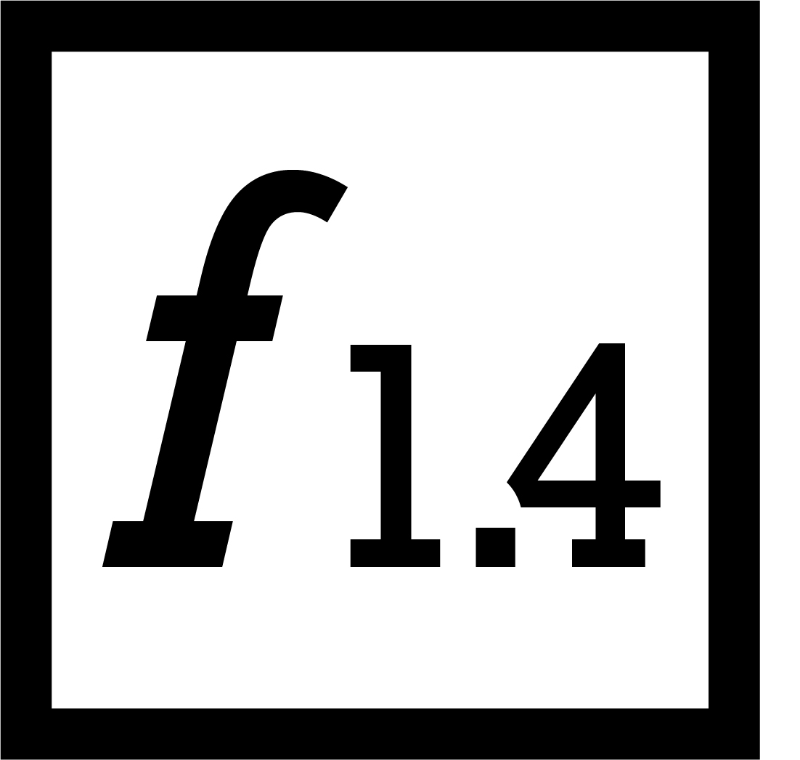

Hallo!
Ich bin Mediamatiker und erstelle multimediale Inhalte, wie Videos, Fotos, Flyer, Webseiten, Brandings und vieles mehr. Meine Skills und Tätigkeitsbereiche sind sehr breit. Ich verfüge über einen Berufsmaturabschluss des Typs Wirtschaft und Dienstleistungen, weshalb Buchhaltung und BWL für mich keine Fremdwörter sind.
Wenn du mich wegen einer Projektanfrage oder sonstigem kontaktieren möchtest, kannst du gerne direkt eine E-Mail schreiben. Ich freue mich von dir zu hören!
Ich bin mit vielen neuen modernen Technologien vertraut. Mein Ziel ist es, Wünsche kundenorientiert umzusetzen. Ich interessiere mich ebenfalls für IT und kann neue Sachen schnell auffassen.
Schnellzugriff
Sieh dir das wichtigste in kürze an. Klicke auf einen der untenstehenden Links, um mehr zu erfahren.
Entdecke, was alles möglich ist
Suchfunktionen
Die interdisziplinäre Abschlussarbeit, welche Teil des Qualifikationsverfahrens ist, habe ich mit der Note (ausstehend) bestanden. Das Produkt meiner Abschlussarbeit war ein animiertes Erklärvideo.
Es wurde für die Website der Mediathek VBS ein zielgruppengerechtes animiertes Erklärvideo erstellt, welches die Suchfunktionen schnell, leicht und verständlich erklärt. Die Mediathek des VBS ist die grösste Medienplattform der Schweizer Armee. Sie ist das Zuhause von zahlreichem Foto-, Video- sowie Retromaterial des VBS.
Erklärvideo für die Mediathek VBS

Buchungsprozess
CARIFY ist ein innovatives Schweizer Start-Up, welches sich auf Auto-Abos spezialisiert hat. In Kooperation mit diversen Garagen bietet CARIFY eine breite und qualitative Auswahl an Autos an.
Da sich CARIFY statt einem reinen Text ein Video für die Erklärung des Buchungsprozesses wünschte, wurde ein solches erstellt. Es zeigt den Prozess leicht verständlich auf, ist zeitgemäss und der Zielgruppe angepasst.
Erklärvideo für CARIFY
Ein einmaliges Erlebnis.
Die Fotowoche ist ein Event, das exklusiv nur in der BiCT AG jährlich stattfindet. Während einer Woche konnte ich unterschiedlichste Posten zur Fotografie zusammen in einem Team erarbeiten. Die Ergebnisse lassen sich sehen! Zusammen haben wir gute Ideen für ansprechende Motive entwickeln können. Klicken Sie doch einfach auf Mehr lesen um zur Gallerie zu gelangen!
Dank der Fotowoche besitze ich ein grosses Fachwissen in der Fotografie sowie in Photoshop und Camera Raw. Im Bereich Fotografie gefallen mir Landschaftsfotografie, Food Photography und Produktfotografie am besten.

Fotowoche
Jede Menge Projekte.
Egal ob die Unterstützung bei einem Event, die Erstellung einer Broschüre oder die Konzipierung eines MockUps für eine neue Website eines Unternehmens – in der BiCT AG konnte ich eine Menge an Erfahrung mit Projekten sammeln.
Ich empfehle Ihnen, mal einen Blick auf meine Projekte zu werfen, die ich in der BiCT AG erstellen konnte. Sie werden staunen, wie gross die Liste ist. Überzeugen Sie sich von meinem breiten Know-how.
Echte Kunden.
Das Beste ist: Ich hatte schon mehrmals Kontakte mit unterschiedlichen Kundinnen und Kunden. Am Anfang meiner Lehre wurde ich auf Kundenkontakte vorbereitet, indem meine Coaches die Kunden repräsentierten. Doch im 2. Lehrjahr ging es los.
Ich konnte an meiner alleresten Sitzung mit einem Unternehmer und seinem Sohn teilnehmen. Ausserdem durfte ich jüngere Leute während eines Schnupperevents in der BiCT AG betreuen und ihnen den Beruf näherbringen. Als Highlight konnte ich an der BAM 2018 mitmachen – Beratung der Jugendlichen und deren Eltern all inclusive.
BiCT AG, Projekte, Kundenkontakte
Berufsmaturität und noch mehr Projekte.
Neben meiner Lehre in der BiCT AG besuche ich das BBZ Biel und mache parallel dazu die Berufsmaturität. Der Gesamtdurchschnitt dieses Semesters liegt bei einer Note von 5.1.
Im BBZ Biel konnte ich meinen Horizont auf Hinblick auf meine Projekterfahrungen wesentlich erweitern. Das Highlight ist höchstwahrscheinlich die Planung und die noch folgende Erarbeitung eines zusammen mit einem Team erstellten Kinderbuches mit lustigen Geschichten. Doch selbstverständlich war das nicht das einzige Projekt – schauen Sie sich am besten die ganze Liste an, um meine Fähigkeiten und Skills in der Praxis zu sehen.
BBZ Biel, Projekte, Noten
Das Hobby zum Beruf.
Nicht nur während der Arbeits- und Schulzeit bin ich kreativ unterwegs – auch in meiner Freizeit liebe ich es, gelegentlich kleinere Projekte anzugehen. Schauen Sie sich diesen Artikel an, um ein paar Beispiele von Arbeiten zu sehen, die ich frei in meiner Freizeit gemacht habe.
Design am PC hat mich schon immer irgendwie fasziniert. Schon als kleines Kind habe ich es geliebt, am Computer grafisch etwas auszuprobieren – später auch am iPad. Heute erstelle ich grafische Arbeiten im professionellen Bereich mithilfe von meinem Computer, Grafik-Tablet und der Adobe Palette. Man könnte also sagen, dass ich mein Hobby zum Beruf gemacht habe.
Eigene Projekte
Theorie in die Praxis umgesetzt
In den Überbetrieblichen Kursen konnte ich mein neu erlerntes Wissen in die Praxis umsetzen.
Erfahren Sie, welche Noten ich in den ÜKs hatte, indem Sie sich den Beitrag anschauen.
Ebenfalls können Sie einen Blick auf meine Dokumentation des ÜK 1 und ÜK 2 werfen. Sie werden sehen, wie viele wertvolle Informationen ich über den Computeraufbau, Komponenten, Betriebssysteme, Design, Layout uvm. mit auf den Weg nehmen konnte.
Gestaltung.
Gestaltung ist das Kernthema meines Arbeitsgebiets. Ohne Gestaltung geht gar nichts. Vielleicht ein bisschen was, aber sonst nichts. Deshalb lege ich grossen Wert auf Gestaltung.
Sehr gerne können Sie sich meine Dokumentation zu den Grundlagen der Gestaltung anschauen. Diese habe ich seit Anfang meiner Lehre geführt, um jede wichtige Information über Gestaltungsgrundlagen und Mediengestaltung festzuhalten. Über 100 Seiten an erlerntem Fachwissen.
Marketing.
Nebst der Gestaltung spielt das Marketing eine wichtige Nebenrolle. Ohne Marketing wäre Gestaltung nur Kunst – aber sogar Kunst hat einen Bezug zum Marketing.
Während meiner Lehre lernte ich die Tricks der visuellen Werbetechniken kennen sowie andere Aspekte des Marketings in Zusammenhang mit Gestaltung. In derselben Dokumentation hielt ich alles über Marketing und Werbetechniken fest und verfüge so über ein grosses Wissen in diesem Bereich.
Medien- gestaltung
Die Macht der Bilder.
Mit Photoshop begann der Einstieg in meine Ausbildung als Mediamatiker. Ich konnte schon zahlreiche Bilder in Photoshop bearbeiten. Schau sie dir in der Gallerie an, um einen Einblick zu erhalten.
Bildbearbeitung, Fotografie und mehr mit Photoshop

Die Macht der Vektoren.
Vektorbasierte Grafiken bilden meistens die Grundlage für ein Multimediaprodukt, wie z. B. eine Website, einen Flyer oder ein Video. Schau dir doch einige Projekte an, welche ich in Illustrator erstellt habe.
Vektorbasierte Grundlage für diverse Projekte

Es kommt auf das Zusammenspiel drauf an.
In InDesign gestalte ich diverse Printprodukte. Dabei achte ich auf das passende Zusammenspiel zwischen Typografie, Grafiken und Bildern. Hier kannst du dir einige Beispielarbeiten anschauen.
Layoutdesign mit InDesign

Zum Leben erweckte Bilder.
After Effects erweckt Standbilder zum Leben. Das komplexe Programm bietet viele Möglichkeiten, um Animationen aus vektorbasierten Grafiken oder Bildern zu erstellen. Das geschieht mit Hilfe von sogenannten Keyframes, also Schlüsselbildern.
Während meiner Lehre habe ich nur die Grundlagen von After Effects angeschaut. Trotzdem kann ich Sachen wie Bauchbinden, Titler, Übergänge oder sogar einfache charakterbasierte Animationen erstellen. Auf rund 15 Seiten habe ich meine Notizen über After Effects zusammengefügt.
Grundlagen After Effects

Professionelle Filme.
Premiere Pro wird dazu verwendet, einzelne Videoaufnahmen zu einem ganzen Film zusammen zu schneiden. So gesehen sind also Filmtechnik und Filmschnitt miteinander verbunden, denn zuerst werden einzelne Video-Takes gemäss Storyboard aufgenommen, welche danach in Premiere Pro geschnitten und mit Spezialeffekten versehen werden.
Die Coaches in der BiCT AG konnten mir extrem viel Fachwissen über Premiere Pro, aber vor allem über die Filmtechniken übermitteln. Storyboard, Konzept, Berücksichtugung der Handelsachse und vieles mehr werden von mir stets beim Filmdreh bearbeitet. Denn der Spruch "Fix it in the post" darf nicht zum Motto werden!
Gerne können Sie sich auch meine über 50-seitige Arbeit über Premiere Pro und Filmtechniken ansehen.
Premiere Pro, Filmschnitt, Filmtechniken

Ein breitgefächertes Wissen.
Als Mediamatiker spezialisiere ich mich nicht nur für einen Bereich, sondern in allen Bereichen. Darunter gehören Web-Design und Webtechnologien, Soundtechniken aber auch Projektmanagement. Schauen Sie sich diesen letzten Beitrag an, um mehr über diese drei Bereiche zu erfahren.